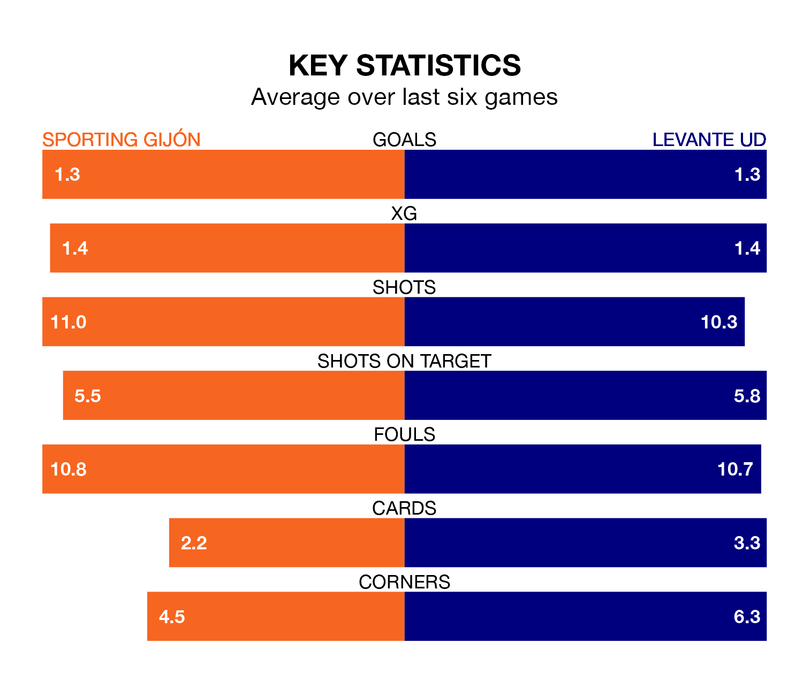

Sporting Gijón host Levante UD in Saturday's late match at the Estadio Municipal El Molinón looking to bounce back from defeat last time out in the Segunda División.
Sporting Gijón, who sit second in the league after 18 games, fell to a 1-0 away defeat to FC Cartagena on December 2.
They face a Levante side who picked up a win in their last match, a 2-1 victory against Real Valladolid, and who sit 10th in the table.
In Orlando Rubén Yáñez Alabart, Sporting can rely on one of the league's safest pair of hands. He has kept nine clean sheets in his 18 appearances this season, and no 'keeper has prevented the opposition scoring more often in the Segunda División.
In Levante's net, Andrés Fernández has six clean sheets in 10 games.
With 25 goals in 18 games so far this season, Sporting Gijón are scoring more than average in the league with 1.4 goals per game. And they are conceding fewer than average, letting in 14 goals at a rate of 0.8 per game.
Levante UD are also above average scorers, with 1.3 goals per game, compared to a league average of 1.2. They have also conceded 1.3 goals per game.
The hosts are in reasonable form in the Segunda División, with three wins and two draws from their last six games.
With a win and a draw over that period, the away side's form is much worse – they have taken four points from 18, compared to Sporting's 11.
Over the last two years, Sporting and Levante have played each other twice. Levante won one of them and they drew the other.
Their last meeting was on January 6, when they played out a 1-1 draw.
